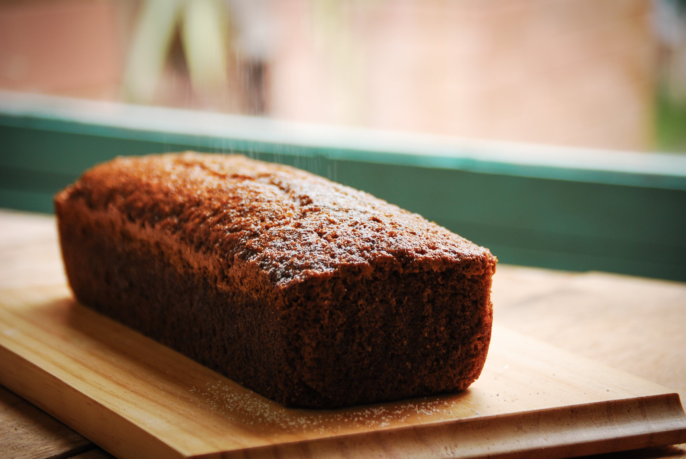

Home
Chocolate Chip Banana Bread

Description
Enjoy this chocolate chip banana bread for breakfast, as a snack, or for dessert. It's quick, easy, and the perfect way to use up extra bananas!
Ingredients
- 2 cups all-purpose flour
- 1 teaspoon baking powder
- 1 teaspoon baking soda
- 1 teaspoon salt
- 3 ripe bananas, mashed
- 1 tablespoon milk
- 1 teaspoon ground cinnamon, or to taste
- 1 cup white sugar
- ½ cup butter, softened
- 2 large eggs
- 1 cup semisweet chocolate chips
Steps
- Mix the dry ingredients in one bowl; the bananas, milk, and cinnamon in another bowl; and beat the butter and sugar in a third bowl, adding the eggs one at a time.
- Stir the banana mixture into the butter mixture. Mix in the flour mixture. Fold in the chocolate chips.
- Pour the batter into a prepared loaf pan and bake in the preheated oven until a toothpick comes out clean.